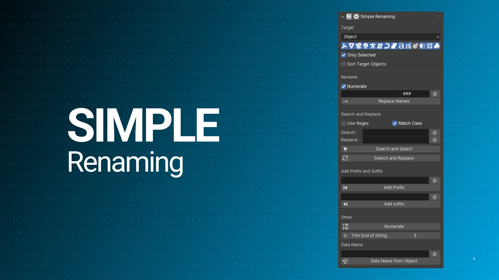
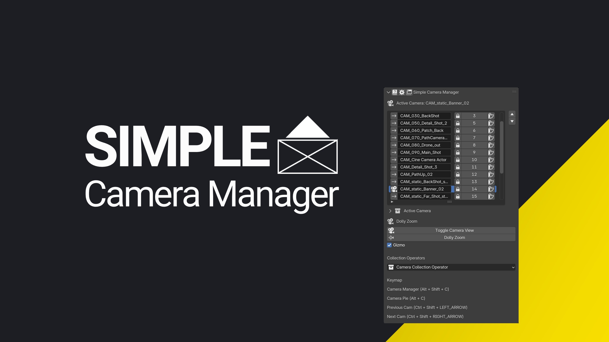
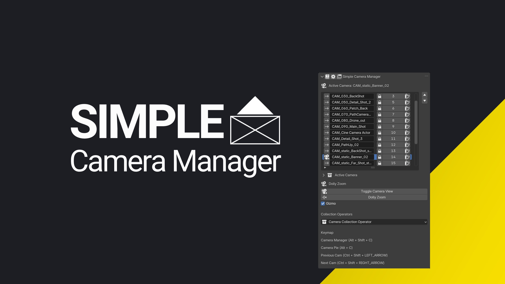

Alpine Empire

Driven by a passion for crafting rich, immersive worlds, Alpine Empire thrives at the intersection of art and technology. With a problem-solving mindset, deep technical knowledge, and an artistic eye, the focus is on transforming creative visions into reality. The goal is to support you create engaging and memorable experiences that resonate with players.
Alpine Empire offers the following services:
- 3D Environment Art: Creating stunning, immersive environments that captivate players.
- Game Art Consulting: Providing expert advice on game art pipelines, workflows, and best practices.
- Game Art Tools: Developing tools that streamline the game art creation process, making it easier for artists to focus on their craft.
- Mentorships and Workshops: Sharing knowledge and expertise through personalized mentorships and workshops.
Who is Alpine Empire?
I am Matthias, born and raised in the narrow, picturesque valleys of the Alps, surrounded by rugged landscapes, historic farmhouses, and ancient castles. This rich and inspiring environment shaped my passion for crafting immersive worlds in game development.
Alpine Empire is built on over a decade of game development experience, where I have helped shape worlds, levels, and pipelines at every stage of production. As an Environment Artist, I’ve contributed to AAA titles such as Alan Wake 2, Crossfire X, and FBC Firebreak, among others. World-building lies at the heart of what I do. I dedicate time to researching, analyzing, and understanding environments to create spaces that feel authentic and immersive. Additionally, I focus on developing workflows and tools that push the boundaries of what is possible. My process involves close collaboration with Directors, Leads, and teams to establish, refine, and uphold a unified artistic vision. Problem-solving is one of my core strengths. With a solid technical foundation, I adapt quickly to new tools and workflows and have experience working across multiple game engines. My approach is open and straightforward, and I maintain a positive, solution-focused attitude. I ensure tasks are managed efficiently, deadlines are met, and challenges—whether artistic or technical—are resolved effectively. This mindset allows me to be a dependable, proactive, and resourceful addition to your team.
I’m always excited to collaborate on new projects—let’s create something extraordinary together.
Simple Tools
To further support artists and developers, I’ve created Simple Tools—a collection of tools designed to make game art creation easier. They are straightforward, flexible, and designed to fit into different workflows. Whether you’re managing cameras, creating physics colliders, exporting assets, or batch renaming, Simple Tools help you get the job done!

 


Why Simple Tools?
- Artist-Focused Design: Created by a 3D Environment Artist with years of AAA experience, these tools address real-world challenges faced by artists daily.
- Versatile and Adaptable: Designed for a wide range of use cases and pipelines, ensuring they meet the needs of diverse workflows.
- Continuous Improvement: Regularly updated based on user feedback to ensure they remain effective, efficient, and aligned with industry needs.